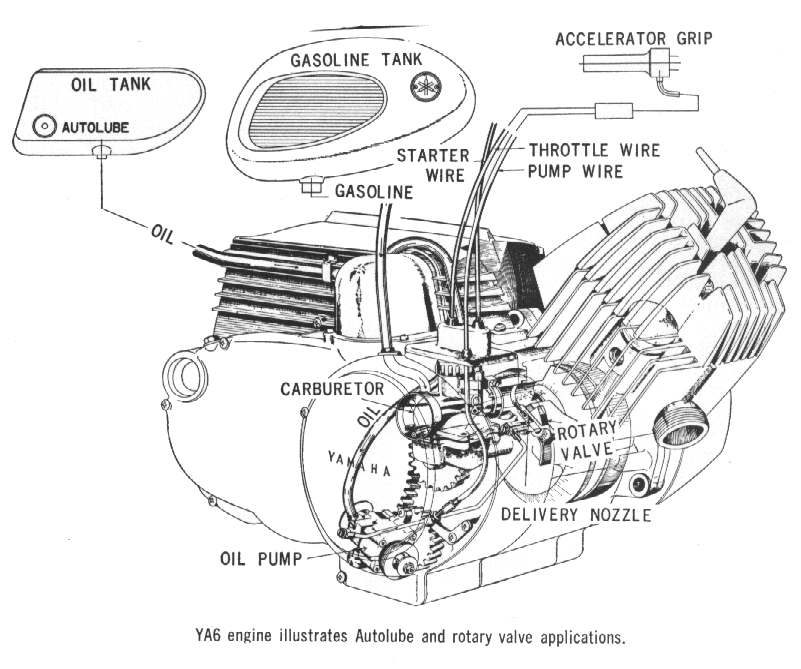
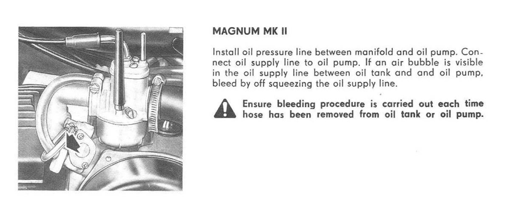

An old two-stroke with an oil injection pump may have a dry pump, a dirty tank or hard seals. A pump that has been run dry can be ruined. Some owners remove or block the pump and run pre-mix, but then the pump is gone and the engine may not oil as designed. On some engines oil is meant to reach the crank bearings and cylinder walls directly, and oil in the fuel may not reach every part of a bearing. Bring the pump back into use with this order.
Safety
- Petrol is flammable. Work outdoors, away from flames.
- Old engines may smoke heavily at first.
Steps
- Inspect and clean the oil tank and the oil line to the pump. Check that the vent in the tank or cap is not blocked.
- Fill the tank with fresh two-stroke oil.
- Bleed the pump: Bleed air from a two-stroke oil pump.
- Check the cable setting: Set the oil pump cable so it follows the throttle.
- Put a pre-mix in the fuel tank while the pump settles, as a safety margin. Use the ratio in your manual, or a little richer.
- If the engine has spark, compression and fuel, start it and let it idle. With the engine idling, turn the pump control lever to full on. Run it until oil clearly reaches the engine. A lot of smoke from the exhaust shows this.
- Change to plain petrol and check for smoke again with the lever at full on. A new rebuild can run a full tank of pre-mix to add lubrication while it breaks in.
- If you want to be sure, test the oil pump output.
- If the engine pours out smoke, replace the old crankshaft oil seals before you replace the pump. Both seals usually need it on an old engine.
Check your work
- A light haze of smoke at idle and no heavy smoke at steady speed.
- The oil tank level slowly falls with use.
If it did not fix the problem
- Parts for old pumps may only be available as old stock. Find the part number on a parts diagram. Some parts are sold only with the whole pump.
- Blue or grey smoke from the exhaust.